Про F-Droid и возможность качать видео и аудио с YouTube
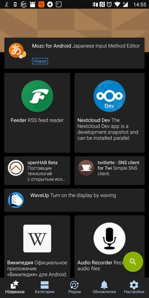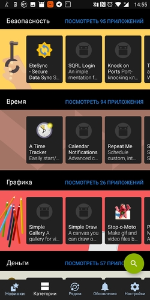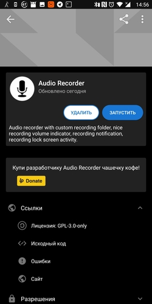
На андроиде подавляющее большинство наших соотечественников пользуется приложениями, представленными исключительно в плей маркете. Кто-то что-то слышал о Яндекс.Store, ко-то возможно им даже пользовался, чаще всего это происходит лишь в том случае, если Яндекс.Store был предустановлен на устройство. Но мало кто из моих знакомых слышал об F-Droid. Конечно, он ориентирован на приложения с открытым исходным кодом, для большинства приложений нет скриншотов, а так же там нет бОльшей части того, чем мы привыкли пользоваться и что получаем из плей маркета. Это не замена плей маркету, а скорее приятное дополнение к нему.
У компании google есть свои маркетинговые ограничения, распространяющиеся в том числе и на приложения, доступные в плей маркет. Cледовательно, не все приложения попадают в Google Play. Яркий пример - приложение NewPipe. Оно позволяет скачивать видео с YouTube, а так же воспроизводить его в отдельном плавающем окне или проигрывать звук видео в фоновом режиме при выключенном экране. То есть, приложение предоставляет те функции, за которые другие приложения требуют деньги, зачастую по подписке (привет тебе youtube red). Кроме скачивания видео, можно скачать и аудио отдельно. Думаю, из скриншотов функционал будет понятен. Так же поддерживает иморт ваших каналов из ютьюб и возможность скачивать музыку из SoundCloud.
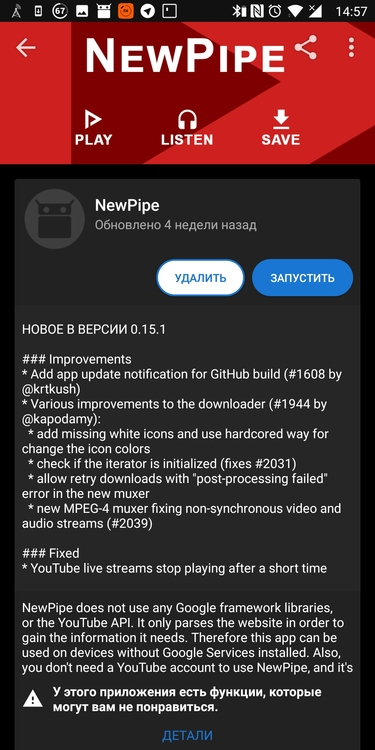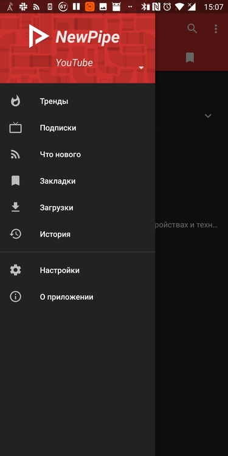
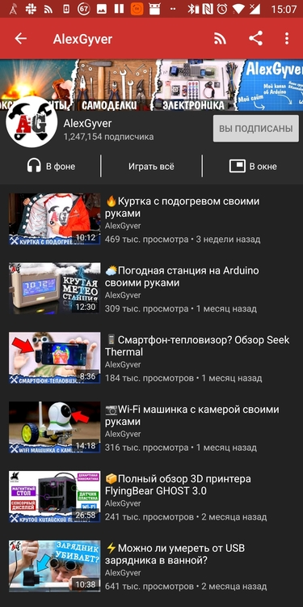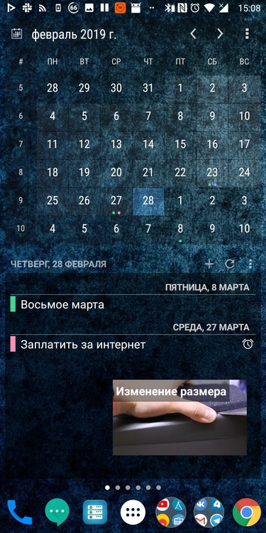
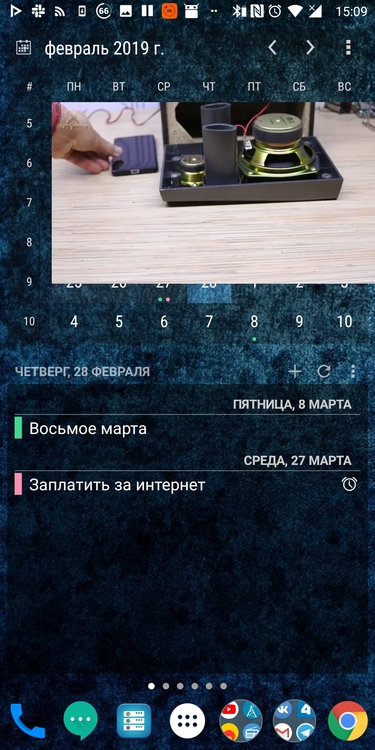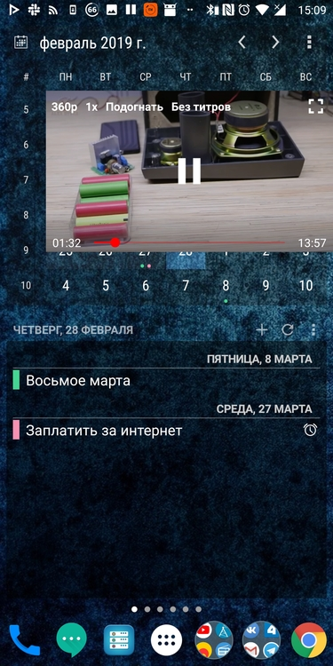
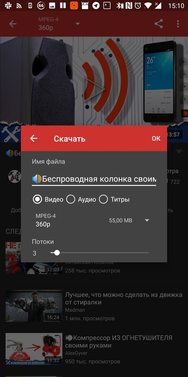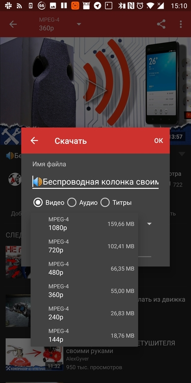
Лучшее приложение для записи звука, о котором я тут уже писал, я тоже нашёл на F-Droid. Или вот например, приложение для сканирования вайфай сетей вокруг - WiFiAnalyzer. Работает как и множество других подобных приложений из плей маркета, но без раздражающей рекламы. А так же есть некоторые приложения, существующие и на плеймаркете и в F-Droid, но в первом случае они могут быть платными или содержать рекламу, а во втором - абсолютно бесплатными и без рекламы. Например, TinyTinyRSS или Termux, о которых я обязательно расскажу как-нибудь в другой раз, потому что они явно стоят отдельных статей. Сам F-Droid можно скачать на главной странице: https://f-droid.org/.
Теги: android-soft